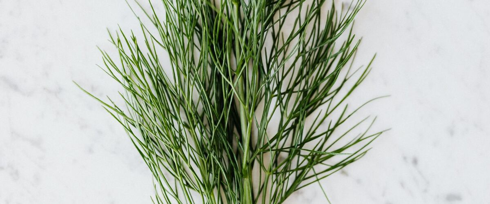

When to plant dill in Aberdeen and Hoquiam, WA
Plant dill from seed, directly in the garden in Aberdeen and Hoquiam, Apr 1 – Jun 3.
Why these dates
Aberdeen and Hoquiam's typical last spring frost is March 30. On the coast, the soil is usually ready for dill around April 1.
Coast. Mild winters but cool, foggy summers. Frost is rarely the problem; warmth is. Pick early, cool-tolerant varieties of tomatoes and squash.
- Difficulty
- Easy
- Sun
- Full sun
- Spacing
- 12 inches apart
- Planting depth
- ¼ inch deep
- Frost
- Handles light frost
- First harvest
- About 60 days after planting
Step by step
- Prepare the bed: loosen the soil and mix in an inch or two of compost.
- Plant seeds Apr 1 – Jun 3, ¼ inch deep, 12 inches apart.
- Keep the soil evenly moist until sprouts appear, which can take one to three weeks in cool soil.
- Harvest: Snip leaves any time. For pickling, cut the flower heads just as they open.
Varieties that do well here
- Fernleaf (compact)
- Bouquet
- Mammoth
Watch out for
Tall plants flop in wind and rain. Grow 'Fernleaf', a compact variety, or give it a stake.
Doesn't like being transplanted; sow it where it will grow. Let a few plants flower to feed beneficial insects.
Common questions
When is the last frost in Aberdeen and Hoquiam, WA?
Typically March 30. In 9 years out of 10, frost is over by April 25. These are 1991–2020 NOAA climate normals for Hoquiam Bowerman Airport.
Is it too late to plant dill in Aberdeen and Hoquiam?
The spring planting window runs through June 3. Later plantings tend to struggle in summer heat.
How long until I can harvest dill?
About 60 days after planting. Snip leaves any time. For pickling, cut the flower heads just as they open.
Also plant in Aberdeen and Hoquiam around the same time
Planting dates for dill in nearby areas
- Astoria, OR Apr 1 – Jun 3
- Coos Bay and North Bend, OR Apr 1 – Jun 3
- Forks, WA Apr 1 – Jun 3
Full planting calendar for Aberdeen and Hoquiam · Dill in every city